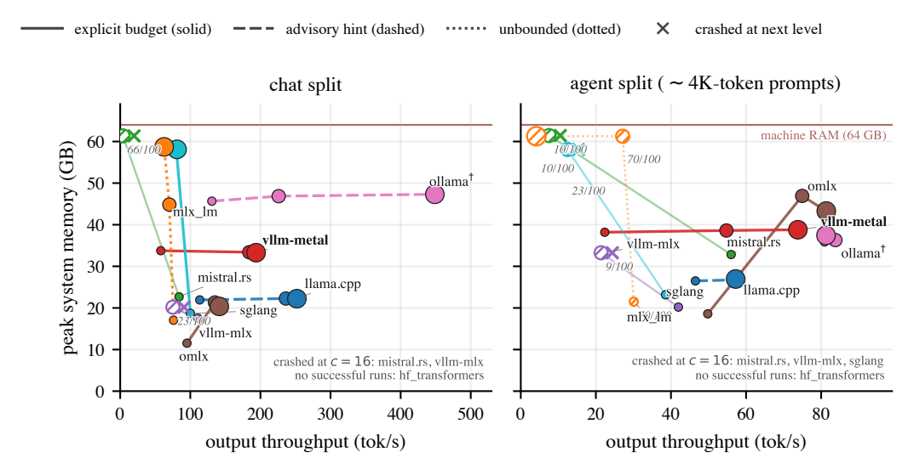
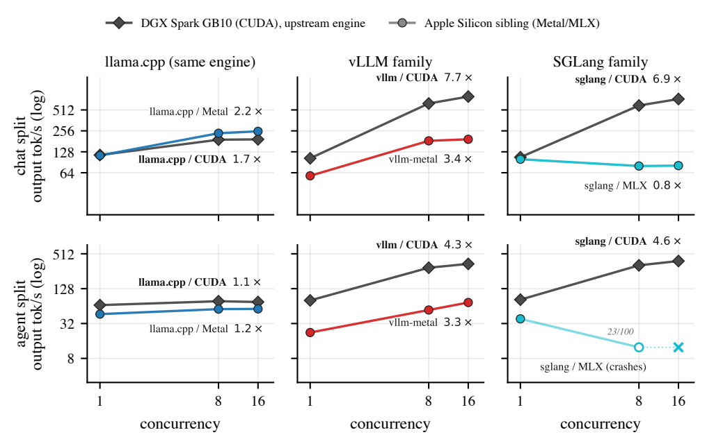

Speed, memory, and fidelity for LLM serving on unified-memory desktops. All requests hit an OpenAI-compatible endpoint at concurrency 1 / 8 / 16, BF16 weights, n=100 per level.
benchmark repo weekly journals paper (soon)
SiliconBench audits the LLM serving engines that run on unified-memory desktop hardware. Nine stacks are benchmarked on Apple Silicon against the same weights and prompts, with a CUDA-native reference track on an NVIDIA DGX Spark for the three engines the two ecosystems share. A maintainer agent re-runs the benchmark, commits the raw results, and this page rebuilds from them automatically.
Speed alone is a misleading ranking on shared machines: the engine pool is the same memory your browser and IDE use, and a stack can be fastest while claiming most of it or while returning wrong output. The tables therefore keep three lenses side by side. Speed is measured on two workloads (a short-prompt chat split and an agent split whose multi-turn prompts reach several thousand input tokens), memory as the peak footprint during serving, and fidelity as weighted F1 on a classification task against an NVIDIA reference on identical weights. Try sorting by tok/s at c=1 and then at c=16: the point of the concurrency sweep is that single-stream rankings do not survive load.
Single-node serving only. Stacks are listed alphabetically by default; click a column header to sort (failed runs always sink to the bottom); no default ranking is implied; the paper's central finding is that speed-only orderings mislead. ✕ = crashed (<5/100 requests), n/100 = partial run, – = not measured. Trend sparklines show each stack's own shape across c=1/8/16 (per-row normalized; TTFT on a log scale); magnitudes are in the numbers. Hover a stack name for its run provenance; the full record is under per-framework provenance at the bottom.
Runs 2026-05-19 to 2026-07-03 (splits from different runs): 4 of 9 stacks complete every request at every level; 1 degrade to partial or skip; 4 crash at least once.
| Stack | tok/s c=1 | tok/s c=8 | tok/s c=16 | trend | TTFT p50 c=16 | TTFT trend | peak mem GB |
|---|---|---|---|---|---|---|---|
| hf_transformers | ✕ | ✕ | ✕ | – | – | – | 51.9 |
| llama.cpp | 113.5 | 236.3 | 252.0 | 2.22 s | 22.3 | ||
| mistral.rs | 84.0 | 3.866/100 | ✕ | – | 61.4 | ||
| mlx_lm | 76.1 | 70.1 | 62.7 | 2.28 s | 58.7 | ||
| ollama | 130.7 | 226.0 | 448.8 | 385 ms | 47.3 | ||
| omlx | 95.2 | 135.1 | 141.3 | 2.67 s | 21.3 | ||
| sglang | 100.1 | 80.0 | 81.0 | 607 ms | 58.3 | ||
| vllm-metal | 57.8 | 184.1 | 193.8 | 254 ms | 33.8 | ||
| vllm-mlx | 110.9 | 75.223/100 | ✕ | – | 20.2 |
| Stack | tok/s c=1 | tok/s c=8 | tok/s c=16 | trend | TTFT p50 c=16 | TTFT trend | peak mem GB |
|---|---|---|---|---|---|---|---|
| hf_transformers | ✕ | ✕ | ✕ | – | – | – | – |
| llama.cpp | 46.5 | 56.8 | 57.2 | 13.43 s | 26.9 | ||
| mistral.rs | 56.0 | 7.610/100 | ✕ | – | 61.4 | ||
| mlx_lm | 30.170/100 | 27.170/100 | 4.210/100 | 33.83 s | 61.3 | ||
| ollama | 80.9 | 83.8 | 81.3 | 9.88 s | 37.4 | ||
| omlx | 49.8 | 74.9 | 81.4 | 6.27 s | 46.9 | ||
| sglang | 38.5 | 12.423/100 | ✕ | – | 58.1 | ||
| vllm-metal | 22.4 | 54.8 | 73.8 | 736 ms | 38.8 | ||
| vllm-mlx | 42.0 | 21.49/100 | ✕ | – | 33.3 |
| Stack | 0-shot F1 | 5-shot F1 |
|---|---|---|
| vllm-nvidia (ref) | 0.4094 | 0.7364 |
| hf_transformers | 0.3996 | 0.7325 |
| llama.cpp | 0.4031 | 0.7366 |
| mistral.rs | – | – |
| mlx_lm | 0.3953 | 0.7315 |
| ollama | 0.4088 | 0.4463 |
| omlx | 0.3939 | 0.7341 |
| sglang | 0.3955 | 0.7337 |
| vllm-metal | 0.4021 | 0.7343 |
| vllm-mlx | 0.1652 | 0.4805 |
Runs 2026-05-23 to 2026-07-03 (splits from different runs): 5 of 7 stacks complete every request at every level; 2 crash at least once.
| Stack | tok/s c=1 | tok/s c=8 | tok/s c=16 | trend | TTFT p50 c=16 | TTFT trend | peak mem GB |
|---|---|---|---|---|---|---|---|
| llama.cpp | 102.9 | 232.9 | 237.6 | 4.06 s | 13.6 | ||
| mlx_lm | 68.1 | 68.6 | 68.7 | 11.85 s | 12.2 | ||
| ollama | ✕ | ✕ | ✕ | – | – | – | – |
| omlx | 101.1 | 150.5 | 152.7 | 4.55 s | 17.6 | ||
| vllm-metal | 66.8 | 130.4 | 158.4 | 710 ms | 42.8 | ||
| vllm-mlx | 93.8 | 217.6 | 288.2 | 316 ms | 20.8 |
| Stack | tok/s c=1 | tok/s c=8 | tok/s c=16 | trend | TTFT p50 c=16 | TTFT trend | peak mem GB |
|---|---|---|---|---|---|---|---|
| llama.cpp | 49.4 | 84.2 | 89.4 | 9.31 s | 24.6 | ||
| mlx_lm | 38.2 | 37.9 | 38.1 | 25.75 s | 21.6 | ||
| ollama | ✕ | ✕ | ✕ | – | – | – | – |
| omlx | 55.5 | 135.6 | 137.4 | 3.77 s | 26.7 | ||
| sglang | ✕ | ✕ | ✕ | – | – | – | – |
| vllm-metal | 17.4 | 22.3 | 22.3 | 6.38 s | 46.8 | ||
| vllm-mlx | 47.0 | 222.1 | 276.0 | 383 ms | 34.6 |
| Stack | 0-shot F1 | 5-shot F1 |
|---|---|---|
| vllm-nvidia (ref) | 0.6953 | 0.5949 |
| llama.cpp | 0.7016 | 0.5965 |
| mlx_lm | 0.6940 | 0.5907 |
| omlx | 0.6959 | 0.5894 |
| vllm-metal | 0.6865 | 0.6054 |
Runs 2026-05-24 to 2026-07-03 (splits from different runs): 3 of 5 stacks complete every request at every level; 1 degrade to partial or skip; 1 crash at least once.
| Stack | tok/s c=1 | tok/s c=8 | tok/s c=16 | trend | TTFT p50 c=16 | TTFT trend | peak mem GB |
|---|---|---|---|---|---|---|---|
| llama.cpp | 21.1 | 36.1 | 35.7 | 26.94 s | 29.0 | ||
| mlx_lm | 14.4 | 14.5 | 14.5 | 50.05 s | 31.7 | ||
| ollama | ✕ | ✕ | ✕ | – | – | – | – |
| omlx | 24.2 | 56.3 | 58.1 | 9.98 s | 28.2 | ||
| vllm-metal | 18.4 | 58.7 | 86.8 | 576 ms | 39.0 |
| Stack | tok/s c=1 | tok/s c=8 | tok/s c=16 | trend | TTFT p50 c=16 | TTFT trend | peak mem GB |
|---|---|---|---|---|---|---|---|
| llama.cpp | 12.8 | 21.0 | 20.2 | 59.05 s | 41.6 | ||
| mlx_lm | 5.4 | 5.4 | 5.4 | 113.20 s | 41.0 | ||
| omlx | 18.5 | 60.6 | 61.9 | 11.56 s | 41.7 | ||
| vllm-metal | 6.0 | 10.6 | 9.087/100 | 7.98 s | 47.1 |
| Stack | 0-shot F1 | 5-shot F1 |
|---|---|---|
| vllm-nvidia (ref) | 0.8511 | 0.9128 |
| llama.cpp | 0.8497 | 0.9107 |
| mlx_lm | 0.7497 | 0.8856 |
| omlx | 0.5524 | 0.0453 |
| vllm-metal | 0.8201 | 0.8889 |
Runs 2026-07-03 to 2026-07-04 (splits from different runs): 3 of 3 stacks complete every request at every level.
| Stack | tok/s c=1 | tok/s c=8 | tok/s c=16 | trend | TTFT p50 c=16 | TTFT trend | peak mem GB |
|---|---|---|---|---|---|---|---|
| llama.cpp | 115.0 | 191.1 | 193.1 | 3.03 s | – | ||
| sglang | 106.8 | 592.3 | 734.1 | 42 ms | – | ||
| vllm | 103.3 | 633.3 | 796.0 | 52 ms | – |
| Stack | tok/s c=1 | tok/s c=8 | tok/s c=16 | trend | TTFT p50 c=16 | TTFT trend | peak mem GB |
|---|---|---|---|---|---|---|---|
| llama.cpp | 66.5 | 77.6 | 75.3 | 10.15 s | – | ||
| sglang | 82.6 | 323.5 | 384.1 | 84 ms | – | ||
| vllm | 80.2 | 294.1 | 342.7 | 134 ms | – |
Runs 2026-07-03 to 2026-07-04 (splits from different runs): 3 of 3 stacks complete every request at every level.
| Stack | tok/s c=1 | tok/s c=8 | tok/s c=16 | trend | TTFT p50 c=16 | TTFT trend | peak mem GB |
|---|---|---|---|---|---|---|---|
| llama.cpp | 108.0 | 271.2 | 276.4 | 3.42 s | – | ||
| sglang | 95.0 | 580.2 | 935.3 | 50 ms | – | ||
| vllm | 94.2 | 529.8 | 680.6 | 113 ms | – |
| Stack | tok/s c=1 | tok/s c=8 | tok/s c=16 | trend | TTFT p50 c=16 | TTFT trend | peak mem GB |
|---|---|---|---|---|---|---|---|
| llama.cpp | 76.6 | 139.3 | 148.9 | 5.39 s | – | ||
| sglang | 79.4 | 396.4 | 684.1 | 66 ms | – | ||
| vllm | 73.4 | 223.9 | 248.5 | 551 ms | – |
Run 2026-07-04: 3 of 3 stacks complete every request at every level.
| Stack | tok/s c=1 | tok/s c=8 | tok/s c=16 | trend | TTFT p50 c=16 | TTFT trend | peak mem GB |
|---|---|---|---|---|---|---|---|
| llama.cpp | 20.5 | 52.9 | 52.3 | 15.71 s | – | ||
| sglang | 17.2 | 129.4 | 211.7 | 167 ms | – | ||
| vllm | 17.2 | 136.6 | 238.5 | 161 ms | – |
| Stack | tok/s c=1 | tok/s c=8 | tok/s c=16 | trend | TTFT p50 c=16 | TTFT trend | peak mem GB |
|---|---|---|---|---|---|---|---|
| llama.cpp | 18.2 | 42.9 | 43.8 | 27.33 s | – | ||
| sglang | 16.0 | 125.8 | 201.9 | 189 ms | – | ||
| vllm | 16.1 | 131.9 | 226.4 | 211 ms | – |
TL;DR.

Stacks with enforced budgets trace flat paths: throughput grows while memory stays put (vllm-metal holds 33 to 39 GB while scaling 3.3x). The sharpest finding cuts against the audit table: mistral.rs and sglang declare explicit budgets, yet both dive to about 60 GB on a 64 GB machine and degrade to partial completion or crash on the agent split. A declared budget is a configuration knob; discipline has to be enforced end to end through the allocator. ollama sits at 98 percent of Metal's 48 GB advisory working-set hint from the first request, sized to the hint rather than to demand.

Upstream vllm on GB10 scales 7.7x on chat and 4.3x on agent with median TTFT of 52 and 134 ms at c=16; sglang behaves alike. The attribution is engine-local: sglang scales 6.9x on CUDA but declines below single-stream on its MLX backend, and llama.cpp plateaus on both platforms, so its ceiling is the engine design, not the hardware. The silicon itself is competitive: single-stream speed matches across platforms, and llama.cpp on the M-series finishes ahead of its own CUDA build at chat c=16 (252 vs 193 tok/s).
A maintainer agent re-runs the benchmark weekly: it pulls each engine from upstream, runs both splits, diagnoses failures, applies bounded fixes inside a write allowlist, and commits a structured journal. In one week a single MLX library bump broke three stacks through three distinct failure modes; two were repaired within the same cycle. The journals are the provenance record behind the live tables above.
Paper & code. The paper is under review; a preprint link will appear here. The harness, per-run results, and weekly journals are public in the benchmark repository.